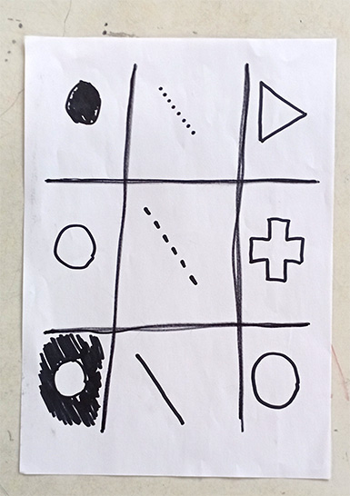
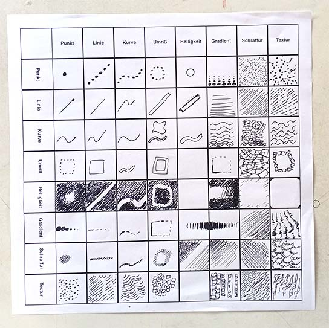

Über die Session
In der zweiten Session begannen wir erneut mit einer analogen Aufgabe, der sogenannten „Morphological Box“. Dabei sollten wir drei Parameter festlegen und diese so miteinander kombinieren, dass insgesamt neun verschiedene Designs entstehen.
Ich entschied mich für drei unterschiedliche Formen, drei verschiedene Linientypen sowie drei Varianten von Fill-ins. Durch die Kombination dieser Parameter konnten verschiedene gestalterische Ergebnisse entstehen.
Anschließend erhielten wir eine weitere Matrix, die wir ausfüllen sollten. Diese stellte unterschiedliche gestalterische Elemente gegenüber, die im weiteren Verlauf miteinander kombiniert werden sollten.
Zum Ende der Session begannen wir damit, einen Wireframe für ein Drawing-Tool zu skizzieren. Ich entschied mich dafür, ein Tool zur Erstellung von Fonts zu konzipieren. Zum einen war dies einer der vorgeschlagenen Ansätze, zum anderen habe ich bereits ein grundsätzliches Interesse an Schrift und Typografie. Zu diesem Zeitpunkt war mir jedoch noch nicht ganz klar, wie ich das Konzept später technisch umsetzen könnte und welche Funktionen im Rahmen meiner Kenntnisse überhaupt realisierbar sind.
Reflexion
Das Kombinieren verschiedener Parameter in der analogen Übung hat mir verdeutlicht, wie viel Variation bereits durch vergleichsweise wenige Rahmenbedingungen entstehen kann. Besonders im Vergleich mit den Ergebnissen in der Gruppe war es spannend zu sehen, wie unterschiedlich die Resultate aus derselben Matrix ausfallen konnten und dennoch alle den vorgegebenen Parametern entsprachen.
Das Erstellen eines Wireframes hat mir zwar einen groben Überblick für den Einstieg in das Drawing-Tool-Projekt gegeben, dennoch fiel es mir zunächst schwer, mir anhand des Wireframes ein genaues Bild meiner späteren Website zu machen. Erst als ich das Konzept des Wireframes im weiteren Verlauf des Projekts erneut aufgriff, wurde mir deutlich, wie hilfreich und sinnvoll dieses Werkzeug für die Strukturierung und Planung der Website sein kann.